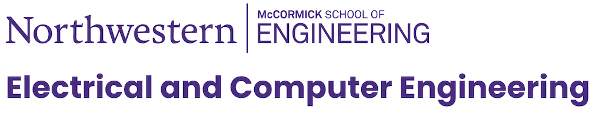

Same-Day Registration Is Still Open!
Registration for QCCS 2026 is free. To join online, please register here. You will receive the Zoom link by email within 30 minutes of registering during the symposium. Please note that the Nov. 11 tutorial is in-person only.
QCCS 2026
4th Annual Quantum Computer Cybersecurity Symposium
To be held November 11 to 13, 2026, at The Guild Lounge in Scott Hall at Northwestern University
QCCS is an annual event co-organized by Prof. Jakub Szefer of the Electrical and Computer Engineering department and the Institute for Quantum Information Research and Engineering (INQUIRE) at Northwestern University.

Pre-QCCS Training:
Nov. 11
The first day training tutorial will be in Cohen Commons; this part of the symposium is in-person only. Cohen Commons is in the Technological Institute, 4th floor. Participants who register for in-person attendance will receive detailed instructions and directions to Cohen Commons.
- 12:00 — Welcome and training introduction; Prof. Jakub Szefer
- 12:15 — Quantum Computer Cybersecurity tutorial, part 1; Prof. Jakub Szefer
- 13:00 — Short Break
- 13:15 — Quantum Computer Cybersecurity tutorial, part 2; Prof. Jakub Szefer
- 14:00 — Short Break
- 14:15 — Quantum Computer Cybersecurity tutorial, part 3; Prof. Jakub Szefer
- 15:15 — Conclusion
- 16:00 — Cohen Commons Closes for Attendees
Main Program First Day:
Nov. 12
- 09:00 — The Guild Lounge Opens for Attendees
- Opening and Welcome by Associate Dean
- 9:05 — Welcome to Day 1 — Prof. Jakub Szefer
- 9:10 — Welcome Remarks by Northwestern's Associate Dean for Research and Doctoral Education — Prof. Justin Notestein
- 9:20 — Logistics and Day Overview — Prof. Jakub Szefer
- Keynote
- 9:30 — Keynote — Dr. J.R. Rao, IBM Fellow and CTO, Security Research (IBM Research)
- 10:30 — Coffee and Networking Break
- Session 1
- 10:45 — "Listening to Quantum Gates: RF Side-Channel Analysis of Trapped-Ion Quantum Computers", Mr. Giorgio Grigolo (TU Wien and IQOQI Vienna) and Mr. Dorian Schiffer (TU Wien and IQOQI Vienna)
- 11:00 — "Security and Privacy of Quantum Machine Learning Models", Prof. Swaroop Ghosh (Pennsylvania State University)
- 11:15 — "Quantum Noise-Induced Backdoor Attacks against Zero-Noise Extrapolation", Prof. Lei Jiang (Indiana University Bloomington)
- 11:30 — "Towards Trustworthy Quantum Algorithms: Robustness, Verification, and Realistic Evaluation", Dr. Jeanette Miriam Lorenz (Fraunhofer IKS and LMU Munich)
- Welcome by ECE Chair
- 11:45 — Welcome Remarks by Northwestern's ECE Department Chair — Prof. Prem Kumar
- 12:00 — Lunch / Networking
- Session 2
- 13:00 — "Exploiting Conditional Operations: Emerging Security Threats in Quantum Computing", Prof. Samah Saeed (City College of New York, The City University of New York)
- 13:15 — "Quantum Machine Learning for Data Tampering Detection: Security and Scalability Challenges", Prof. Himanshu Thapliyal (Southern Methodist University)
- 13:30 — "Privacy-Preserving Datapaths for Hybrid Quantum-Classical Systems", Prof. Hung-Wei Tseng (University of California, Riverside)
- 13:45 — "Foes among Friends: Securing Quantum Computing in Multi-Tenant Systems", Prof. Kanad Basu (Rensselaer Polytechnic Institute)
- 14:00 — Coffee and Networking Break
- Session 3
- 14:30 — "Distinguishing Coherent Crosstalk from Calibration Drift via Pauli-Transfer Signatures and Quantum Edge Detection", Prof. Tasnuva Farheen (Louisiana State University)
- 14:45 — "Pseudorandomness and Quantum Many-Body Physics", Prof. Matteo Ippoliti (University of Texas at Austin)
- 15:00 — "GNN-Based Prediction of Quantum Fault Injection Vulnerabilities with Gate-Level Precision", Prof. Yuntao Liu (Lehigh University)
- 15:15 — "A Cross-Layer Design and Validation Framework for Quantum Sensing", Prof. Qiaoyan Yu (University of New Hampshire)
- 15:30 — Open
- 15:45 — Conclusion of Day 1 — Prof. Jakub Szefer
- 16:00 — Day 1 End of Day Networking and Going to Dinner
- 17:00 — QCCS Dinner
Main Program Second Day:
Nov. 13
- 09:00 — The Guild Lounge Opens for Attendees
- 9:05 — Welcome to Day 2 — Prof. Jakub Szefer
- Session 4
- 9:30 — "SecQDevOps: Securing the Quantum Development Lifecycle", Yashoj Shakya (BearingPoint)
- 9:45 — "Adversarial Route Learning in Quantum Repeater Networks", Mr. Brennan Bell (TU Graz)
- 10:00 — "Figures of Merit for Quantum Software Security", Prof. Majid Haghparast (University of Jyväskylä)
- 10:15 — "Metadata Inference Attacks on Quantum Circuit Cutting Pipelines", Dr. Krishnendu Guha (University College Cork)
- 10:30 — Coffee and Networking Break
- Session 5
- 11:00 — "Defending Quantum Classifiers against Adversarial Attacks", Prof. Prabhat Mishra (University of Florida)
- 11:15 — "Securing Networked Distributed Quantum System from Power Side-Channels", Prof. Juntao Chen (Fordham University)
- 11:30 — Open
- 11:45 — "Quantum Cryptanalysis: A Quick Review", Prof. Anupam Chattopadhyay (Nanyang Technological University)
- 12:00 — Lunch / Networking
- Session 6
- 13:00 — "What Skills and Competencies Does It Take to Secure Quantum Computers?", Dr. Kashyap Thimmaraju (TU Berlin)
- 13:15 — "Input-Aware Dynamic Backdoor Attack Against Quantum Neural Networks", Prof. Rui Ning (Old Dominion University)
- 13:30 — "Quantum Cryptography: Towards New Functionalities and Foundations", Prof. Andrea Coladangelo (University of Washington)
- 13:45 — "Secure Information Flow in Quantum Programs", Prof. Mingsheng Ying (University of Technology Sydney)
- 14:00 — Coffee and Networking Break
- Session 7
- 14:30 — "Scheduling as a Defense: Securing Shared Quantum Computers from NISQ to Fault Tolerance", Meng Wang (University of British Columbia)
- 14:45 — "Faster Control, New Attack Surfaces: Securing the Quantum Control Frontier, One Year Later", Prof. Yueqi Chen (University of Colorado Boulder)
- 15:00 — "Optimising Resource Requirements for Practical Implementation of Adversarial Quantum Machine Learning", Prof. Muhammad Usman (Monash University)
- 15:15 — "CLOAQ: Quantum Output Obfuscation for Cloud-Based Quantum Computing", Prof. Vivek Balachandran (Singapore Institute of Technology)
- 15:30 — Conclusion of Day 2 — Prof. Jakub Szefer
- 16:00 — Day 2 End of Day Networking and Going to Dinner
- 17:00 — QCCS Dinner
Sponsors
We are grateful for the sponsorship provided by the companies below.
Quantum Sponsor:
Bronze Sponsor:
Event Support:
We would like to acknowledge the help of Jim Bray, Demetria Giannisis, and K. Michael Brooks from INQUIRE for their assistance in organizing this event.
Accepted Posters
Poster Session Chair: Dr. Sanjay Deshpande (Northwestern University) Poster Program Committee: Dr. Theodoros Trochatos (University of Maryland), Prof. Yuntao Liu (Lehigh University)
Posters are listed alphabetically by the last name of the first author. 12 of 18 poster submissions were accepted and will be presented at the symposium.
- #1 — "QTrustFabric: LLM-Driven Adaptive ABAC and Hierarchical Temporal Attention for Multi-Layer Zero-Trust Security in Quantum Systems", Gabriel Fredrick Anyane-Lah Amponsah, Peniel Gregory Osei Agyemang, Wellington Amponsah, Nana Sekyi-Ahenkan, Joseph Louis Azumah Cofie, Selasi Kwame Ocansey, and Israel Adjei Mensah
- #2 — "Hardware Fingerprinting FTQC via Quantum Decoder Side Channels", Friedrich Doku, Jakub Szefer, and Kaitlin Smith
- #3 — "Fault and Side-Channel Attacks on ML-based Quantum Error Correction Decoders", Anthony Etim
- #4 — "Fingerprinting Quantum Compilers Through Quantum Circuit Features", Barbora Hrdá, Lauren McDonald, and Jakub Szefer
- #5 — "Quality of Service (QoS) Broker for Predictable Quantum-Classical Interfaces", Ashish Kashinath and Klara Nahrstedt
- #6 — "Classical Autoencoder-Based Adversarial Purification for Quantum Machine Learning: Evaluating Robustness Against Adaptive Attacks", Quang Huy Le, Minh Khanh La, Gia Thach Truong, and Ngoc Tuan Hoang
- #7 — "Physics-Aware Gate-to-Pulse Verification for Superconducting Qubits", Konstantinos-Nikolaos Papadopoulos, Yao Lu, and Jakub Szefer
- #8 — "Post-Cut Metadata Inference Attacks on Quantum Circuit Cutting Pipelines", Samuel Punch, Krishnendu Guha, and Utz Roedig
- #9 — "Quantum Fidelity-per-Cost: A Metric for Evaluation of Quantum Computing Systems", Siddarth Shinde and Jakub Szefer
- #10 — "What the Hash Conceals: Pre-Amplification Statistical Testing in Real-World QKD", Darshit Suratwala, Matvey Romanowski, Orr Dunkelman, Elham Amini, and Jean-Pierre Seifert
- #11 — "Evaluating Quantum Circuit Multi-Split Compilation against Oracle-Guided Attacks", Hongyu Zhang, Kejun Chen, Xiaolong Guo, Qian Wang, and Yuntao Liu
- #12 — "Pulse-Level Hardware Real-Time Integrity-Verification Engine for Quantum Computers", Peixin Zhang, Sanjay Deshpande, Barbora Hrdá, and Jakub Szefer
Call for Posters — Closed
The call for posters is now closed. The program committee invited poster submissions from both academia and industry, including from practitioners whose work cannot be published as a conventional paper, across the full spectrum of security for quantum computing systems. The original Call for Posters PDF remains available for reference. Poster sessions will be held in parallel with the invited and contributed presentations.
QCCS Venues
The Guild Lounge in Scott Hall at Northwestern University is the main venue for the QCCS events this year. In addition, the pre-QCCS training will be located at the nearby Cohen Commons in the Technological Institute.
Physical Location: Please see the directions section below for details about the locations of both venues.
Remote Participation: Participants will be provided a Zoom link by e-mail if they are not able to join in person.
QCCS Hotel
Recommended Hotel information.
Participants wishing to stay close to campus are encouraged to book their rooms at the Hilton Orrington or The Graduate. Both hotels are within a 10-minute walk of the venues.
Please see directions for information on how to travel to Evanston and our venues if you are staying in a hotel outside of Evanston.
Directions to QCCS
The main events of QCCS 2026 will be at The Guild Lounge in Scott Hall at Northwestern University, located at 601 University Pl, Evanston, IL 60208.
The pre-QCCS training will be at Cohen Commons in the Technological Institute at Northwestern University, located at 2145 Sheridan Rd, Evanston, IL 60208.
By Car: participants driving to the venues are encouraged to park at the South Campus Parking Garage located at 1847 Campus Drive, which is about an 8-minute walk from the Guild Lounge and about 15 minutes from the Cohen Commons; alternatively, the North Campus Parking Garage located at 2311 North Campus Drive is closer to the Cohen Commons, about a 5-minute walk, but a little farther from the Guild Lounge, about a 15-minute walk. The parking garage cost is about $10 per day.
By CTA Train (Purple Line): participants arriving via metro should take the Purple Line from Chicago to the Davis station located at 1612 Benson Ave, Evanston, IL; the walking distance from the station is about 15 minutes to either venue.
By Metra Train: participants arriving via train should take the Metra train from Chicago to the Davis Street/Evanston station located at 901 Davis St, Evanston, IL; the walking distance from the station is about 15 minutes to either venue.
By Plane: participants flying to the event can fly to O'Hare (ORD) airport. Lyft or Uber from ORD to the venues should take about 35 minutes if there is no traffic and cost about $50.
Founder and General Chair
QCCS was started in 2023 by Prof. Jakub Szefer.
Prof. Jakub Szefer leads the Computer Architecture and Security Laboratory (CASLAB) at Northwestern University. His research focuses on security of computer systems, architectures, hardware, and cloud cyber-infrastructures. He is pioneering the field of Quantum Computer Security, with extensive prior research on processor security, DRAM security, FPGA security, and Post-Quantum Cryptographic hardware.
Resources
List of Resources Relevant to the Symposium
BibTeX with Relevant Publications: A (naturally incomplete) bibliography file containing references to Quantum Computer Hardware Cybersecurity research papers is available at https://github.com/caslab-code/qc-hardware-cybersecurity-bibtex. The bibliography will be continuously updated.